Steps to Getting the PREAUTHKEY from the Server (where ZCS 7.1.2 is installed)
1. Connect to Zimbra Server using Putty.
2. Login as root user.
3. Change the user to Zimbra using
- su – zimbra
- zmprov
- prov> gdpak domain.com
- preAuthKey: Key will be displayed here.
4. The PreAuthKey value needs to be hard coded in the zimbra.class.php file.
“$this->_preAuthKey = preAuthKey “
Note: preAuthKey has to be generated only once, when the Zimbra server is installed.
5. Also in Line Number 41 of zimbra.class.php
protected $_server1 = 'ip-10-73-18-235.ec2.internal'; // hostname of zimbra server.
Steps for Executing the Triggers in Processmaker
1. Enter URL (Your Processmaker Instance).
2. User Id : of the Processmaker.
3. Password : of the Processmaker.
4. Select the Process to be Started.
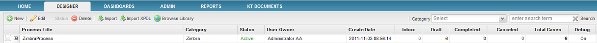
5. Click on New Case.
6. You will get a Screen as below.
7. Select the Trigger you want to Test/Execute and press Start.
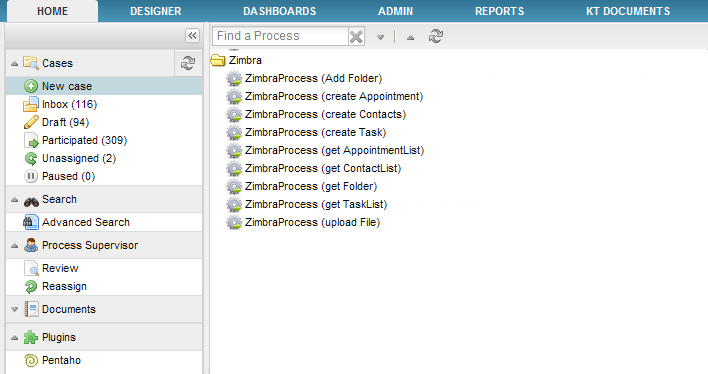
Examples
At the moment of the creation of the trigger some considerations must be followed:
1. To create the trigger, go to DESIGNER > TRIGGERS look for Zimbra triggers and click on the + option to expand them:

Choose one from the list, on the image below Create a Folder trigger was selected:
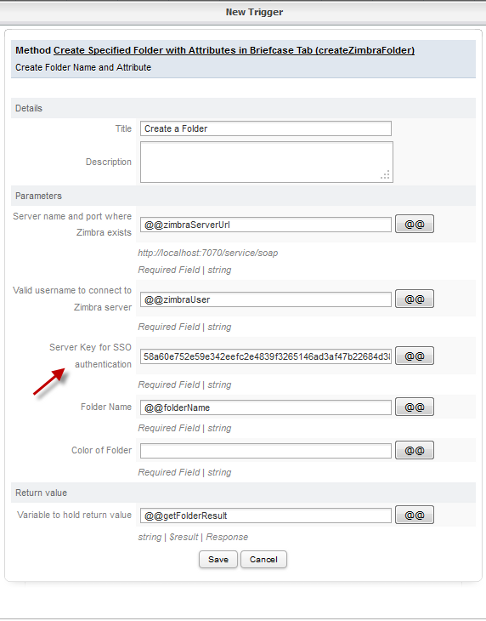
Choose fields of the dynaform form each option to use as a Case Variable, but the field Server Key for SSO authentication must be completed manually with the key generated before.
Create Folder
createZimbraFolder(): It creates a folder on Zimbra environment.
Parameter List:
- ServerUrl: Enter the ipaddress/displayName used for loging in to Zimbra Server.
- username: Enter the UserName used to log in to Zimbra Server.
- preAuthKey: Enter the key generated when zimbra was installed.
- folderName: Enter the Folder Name you wish to Create
- Color: Select the Color you wish to give to the folder.
- protocol: Choose server protocol, either https or http.
OPTIONS for Parameters
Folder Name:Just the folder name if it is a parent folder
If you want to create a sub folder, just give the path as follows
Color:
0 - None
1 - Blue
2 - Cyan
3 - Green
4 - Purple
5 - Red
6 - Yellow
7 - Pink
8 - Gray
9 - Orange

Click on Submit and in the createFolderResult variable you will get a message “Folder Created Successfully”.
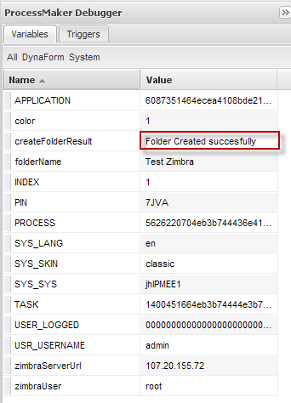
If Folder already exists then the following message will display Folder with name folderName already exists.
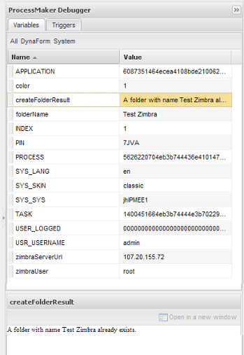
- To check if the folder is actually created or not, login to Zimbra Webserver using the credentials and click on Briefcase Tab you can see the folder with the name and color you selected in the Trigger, on the Right Panel.
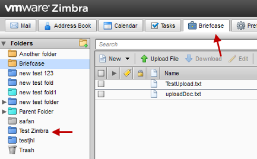
Note: If you are using Zimbra 8, briefcase is disabled by default, so it must be enabled, check this instructions to enable it.
Create Contacts
createZimbraContacts(): It creates a contact in Address Book inside Zimbra environment.
- ServerUrl: Enter the ipaddress/displayName used for loging in to Zimbra Server.
- username: Enter the UserName used for loging in to Zimbra Server.
- preAuthKey: Enter the key generated when zimbra was installed.
- firstName: Enter the First Name of the user whom you want to add in the Contacts List
- lastName: Enter the Last Name of the user whom you want to add in the Contacts List
- email: Enter the Email Address of the user whom you want to add in the Contacts List
- otherData : Enter Other Details such as BirthDay/Anniversary/Custom
- protocol: Choose server protocol, either https or http.
OPTIONS for Parameters:
Other:
- Birthday – YYYY-MM-DD
- Anniversary – YYYY-MM-DD
- Custom – Normal Sentence (plain text)
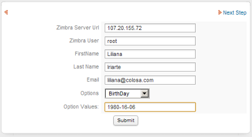
Click on Submit and in the createContactsResult variable you will get a message “Contact Created Successfully”.
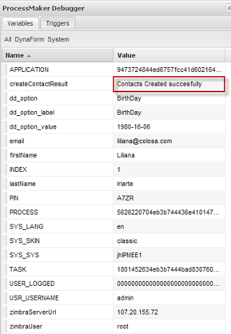
To check if the contact was actually created or not, login to Zimbra Webserver using the credentials and Click on AddressBook Tab you can see the contact with the attributes set in the Trigger, on the Main Content Area.
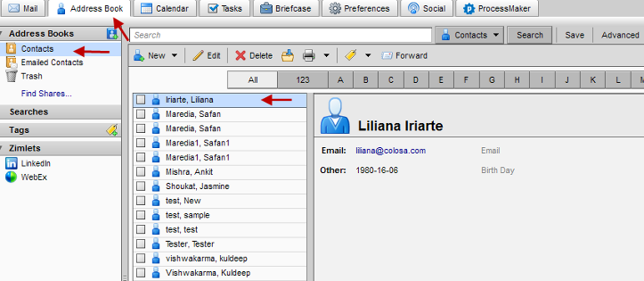
Create Appointment
createZimbraAppointment(): Creates an appointment on Zimbra environment.
Parameter List
- ServerUrl: Enter the ipaddress/displayName used for loging in to Zimbra Server.
- username: Enter the UserName used for loging in to Zimbra Server.
- preAuthKey: Enter the key generated when zimbra was installed.
- subject: Enter the Mail Subject for the Appointment.
- appointmentName: Enter the Appointment Name.
- friendlyName: Enter the Organizer’s Name
- userEmail: Enter the Email Address of the Attendee.
- domainName: Enter the Domain name in which ZCS is installed.
- schedule: Select the Schedule of the Appointment.
- cutype: Select the type of Calendar.
- allDay : Select if the Appointment is an all Day or Not.
- isOrg: Select whether the appointment is Organized by the organizer or no.
- rsvp: Select whether you want RSVP or Not.
- atFriendlyName: Enter the display name of the Attendee.
- role: Select the role of the attendee.
- location: Enter the location where the Appointment is scheduled.
- ptst: Select the participation status of the Attendee.
- startDate: Select/Enter the Starting Date of the Appointment.
- endDate: Select/Enter the Ending Date of the Appointment.
- tz: Select the Time Zone.
- protocol: Choose server protocol, either https or http.
Return value:
- string Result: It returns if the appointment was created successfully or not.
OPTIONS for Parameters
| Parameters | Options |
|---|---|
| Organizer Friendly Name | User name used for logging in to Zimbra Server |
| Schedule | F – Free |
| B – Busy | |
| T – Busy Tentative | |
| U – Busy Unavailable / Out of Office | |
| Is organizer | 0 – No |
| 1 – Yes | |
| Is all day appointment | 0 – No |
| 1 – Yes | |
| Start Date | If All Day is 1 then |
| YYYY-MM-DD | |
| Else | |
| YYYY-MM-DD- HH:MM:SS | |
| End Date | If All Day is 1 then |
| YYYY-MM-DD | |
| Else | |
| YYYY-MM-DD- HH:MM:SS | |
| Time Zone | If All Day is 1 then |
| Time zone parameter should be empty/null | |
| Else | |
| Contitent/CityName (that is used as reference for Time Zone universally) | |
| Role | CHA – Chair |
| REQ – Required | |
| OPT – Optional | |
| NON– Non-participant | |
| Participant Status | NE –Needs-action |
| TE – Tentative | |
| AC – Accept | |
| DE – Declined | |
| DG – Delegated | |
| CO – Completed (todo) | |
| IN – In-process (todo) | |
| Participant Status | IND – Individual |
| GRO – Group | |
| RES – Resource | |
| ROO – Room | |
| UNK – Unknown | |
| Attendees Friendly Name | If more than one Attendee then use a semi-colon to separate the display name of the attendee. |
| User Email | If more than one Attendee then use a semi-colon to separate the email address of the attendee. |
Note: The Options for Role, Chair and Non Participant do not appear in the Appointment.
The Options for Calendar User Type Group and Unknown do not Display Attendees email address in the Appointment.
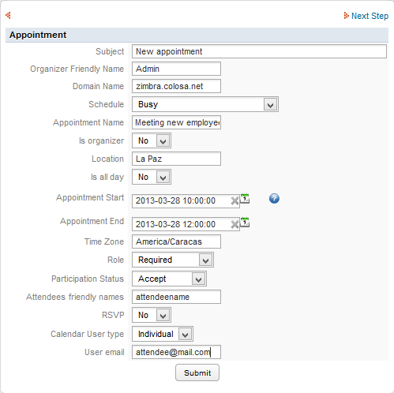
Click on Submit and in the createAppointmentResult variable you will get a message “Appointment Created Successfully”.
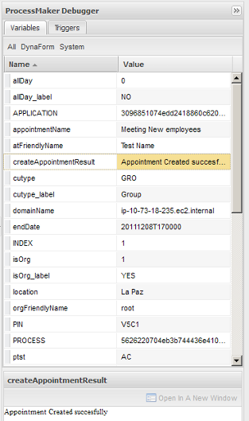
To check if the appointment was actually created or not, login to Zimbra Webserver using the credentials and Click on Calendar Tab you can see the appointment with the attributes you set in the Trigger, on the Main Content Area.

Note: Don't forget to select the checkbox for the calendar in the left panel (deselecting it), and the select it again, the calendar draws properly again, and all the appointments will be refreshed.
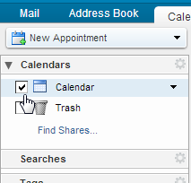
Create Task
createZimbraTask() It creates a task inside Zimbra environment.
Parameter List:
- ServerUrl: Enter the ipaddress/displayName used for loging in to Zimbra Server.
- username: Enter the UserName used for loging in to Zimbra Server.
- preAuthKey: Enter the key generated when Zimbra was installed.
- subject: Subject of the email.
- Task Name: Enter the name of the task.
- friendlyName: Friendly Name of the User.
- userEmail: Enter the Email Address of the user.
- priority: Select the priority of the task.
- allDay: Select if the Task is an all Day or Not.
- class: Select if the task class is public or private.
- location: Enter Location of the Task.
- dueDate: Select/Enter the Due Date of the Task.
- status: Select the status of the Task.
- percent: Percentage of the task Completed.
- protocol: Choose server protocol, either https or http.
OPTIONS for Parameters
| Parameters | Options |
|---|---|
| Is all day task | No- False |
| Yes – True | |
| Class | PUB – Public |
| PRI - Private | |
| Priority | 1 – High |
| 5 – Normal | |
| 10 –Low | |
| Start Date | 0 to 100 - increment by 10 |
| Status | COMP – Completed |
| INPR – In Progress | |
| WAITING – Waiting on Some one | |
| DEFERRED – Deferred | |
| Due Date | YYYY-MM-DD |
Form to be filled will be:
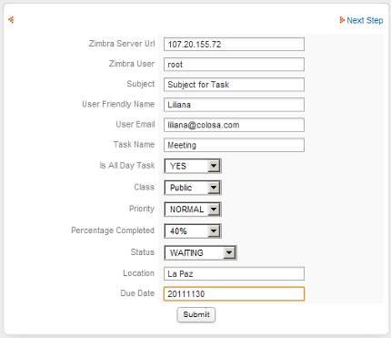
Click on Submit and in the createTaskResult variable you will get a message “Task Created Successfully”.
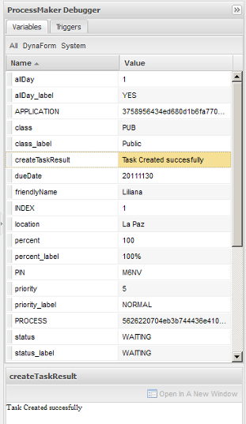
To check if the contact is actually created or not, login to Zimbra Webserver using the credentials and Click on Task Tab you can see the task with the attributes you set in the Trigger, on the Main Content Area.

Get Appointment List
getZimbraAppointmentList():
- ServerUrl: Enter the ipaddress/displayName used for loging in to Zimbra Server.
- username: Enter the UserName used to log in to Zimbra Server.
- preAuthKey: Enter the key generated when zimbra was installed.
- protocol: Choose server protocol, either https or http.

Click on Submit and in the getAppointmentResult variable you will get a list of “Appointments” along with the respective Details.
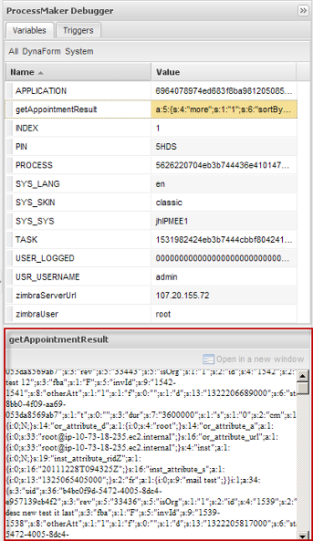
Get Task List
getZimbraTaskList(): It gets the list of all tasks created at Zimbra environment.
- ServerUrl: Enter the ipaddress/displayName used for loging in to Zimbra Server.
- username: Enter the UserName used to log in to Zimbra Server.
- preAuthKey: Enter the key generated when zimbra was installed.
- protocol: Choose server protocol, either https or http.
Click on Submit and in the getTaskResult variable you will get a list of Tasks along with the respective Details

Get Contact List
getZimbraContactList(): It gets the list of all contacts created at Zimbra environment.
- ServerUrl: Enter the ipaddress/displayName used for loging in to Zimbra Server.
- username: Enter the UserName used to log in to Zimbra Server.
- preAuthKey: Enter the key generated when zimbra was installed.
- protocol: Choose server protocol, either https or http.
Click on Submit and in the getContactsResult variable you will get a list of Contacts along with the respective Details.

Get Zimbra Folder
getZimbraFolder(): It gets the characteristics of a specific folder created previously at Zimbra environment.
- ServerUrl: Enter the ipaddress/displayName used for loging in to Zimbra Server.
- username: Enter the UserName used to log in to Zimbra Server.
- preAuthKey: Enter the key generated when zimbra was installed.
- folderName: Name folder which characteristics will be listed.
- protocol: Choose server protocol, either https or http.
Return value:
- string Result: A serialize array.
Upload a File
uploadZimbraFile(): It uploads a file from a Process created on ProcessMaker to the Zimbra Environment.
Parameter List:
- ServerUrl: Enter the ipaddress/displayName used for loging in to Zimbra Server.
- username: Enter the UserName used to log in to Zimbra Server.
- preAuthKey: Enter the key generated when zimbra was installed.
- folderName: Enter the Folder Name where file will be uploaded.
- fileLocation: Enter the file location,on the server where the process is running. i.e /opt/ZimbraDocuments .
- protocol: Choose server protocol, either https or http.
Uploading a File from the Server
Is it possible to upload a file which is located on a Server.
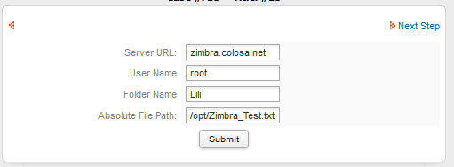
By clicking on Submit on the ProcessMaker Debugger will display the result of the file, if it was uploaded correctly, the message The file has been uploaded Successfully will display:

Uploading a File from an Input Document
This trigger has been improved for version 2.0.40 and later, now to upload files follow the requirements explained below:
- Create an Input Document which will allow to associate it with a file field created inside the Dynaform. It will be needed because to upload a file it needs to be stored in a path, so an input document stored a file in a path inside ProcessMaker installation
- Add a File field to browse the file directly from the computer, so inside your Dynaform create the field as follows associating the input document created previously:
<en>Filepath</en>
</briefcase_filePath12>
- Create text field which will be used as a field where the temporarily path will be saved. This field must be hidden on the Dynaform.
mask="" strto="" dependentfields="" defaultvalue="" hint="" formula="" function="" sqlconnection="" savelabel="0">
<en>Briefcase filePath</en>
</briefcase_filePath>
- Create a text field where the server name will be filled:
mask="" strto="" dependentfields="" defaultvalue="zimbra.colosa.net" hint="" formula="" function="" sqlconnection="" savelabel="0">
<en>Server</en>
</briefcase_server>
The server name could be set on default value as it is defined above.
- Now it's necessary create a field where the folder name where the file will be store, create a dropdown field with the name of folders created inside Zimbra:
defaultvalue="" hint="" sqlconnection="" savelabel="0">
<en>Briefcase Folder<option name="Briefcase">Briefcase</option><option name="PMTest01">PMTest01</option><option name="PMTest02">PMTest02</option></en>
</briefcase_folder>
- Now, create the following Zimbra trigger, where basically once the file is uploaded by the file filed created, a temporarily path is created with the file according with the process number to finally copy the entirely temporarily path into the new path inside ProcessMaker, as it is an input document the path will be:
$invoiceFile = @@briefcase_filePath12;
$app = @@APPLICATION;
$query = "SELECT APP_DOC_UID FROM CONTENT C, APP_DOCUMENT AD "." WHERE C.CON_VALUE = '$invoiceFile' AND "." AD.APP_DOC_UID = C.CON_ID AND AD.APP_UID = '$app'";
@@query1 = $query;
$result = executeQuery($query);//obtain the file ID
if (is_array($result) and count($result) > 0) {
$filePath = PATH_DATA_SITE."files/$app/" . $result[1]['APP_DOC_UID'] . '_1.' . pathinfo($invoiceFile, PATHINFO_EXTENSION);
$filePathNew = PATH_DATA_SITE."files/$app/" . $invoiceFile;
copy($filePath,$filePathNew); //takes the path of the file location and copy it into pm
}
@@filepath1 = $filePath;
@@briefcase_filePath = $filePathNew; //final path to be used
Then add the function uploadZimbraFile as follows:
@@briefcase_ar = uploadZimbraFile (@@briefcase_server,'admin','02296ee1c28994a28be0619dacf7ab012d57a7a265b91079b05b1a8b7b4441ba',@@briefcase_folder,@@briefcase_filePath);
Where the parameters are the following:
- @@briefcase_server : the server name or server address it will depend on how the server is accessed. In this case a case variable taken from the Dynaform created previously.
- admin: Zimbra server's user.
- preAuthKey: key which is generated once Zimbra is installed.
- @@briefcase_folder: name of the folder where the file will be uploaded. In this case this is a case variable taken from the Dynaform created previously.
- @@briefcase_filePath: path where the file will be uploaded.
Finally add this piece of code on the trigger
Assign it Before Assignment.
- It's important to enable the ProcessMaker debugger to check if an error might be generated.
Run a case, the dynaform will be displayed as follows:
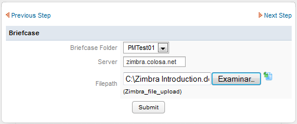
- Click on Submit and in the @@briefcase_ar variable you will get a message “The File has been uploaded successfully”.
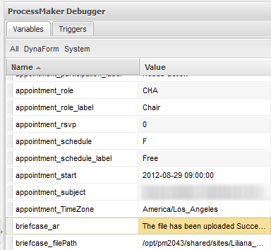
To check if the file is actually uploaded or not, login to Zimbra Webserver using the credentials and Click on Briefcase Tab and Click on the folder you provided as folder name in the trigger, you can see the file uploaded, on the Main Content Area.
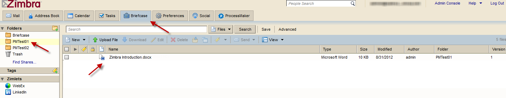